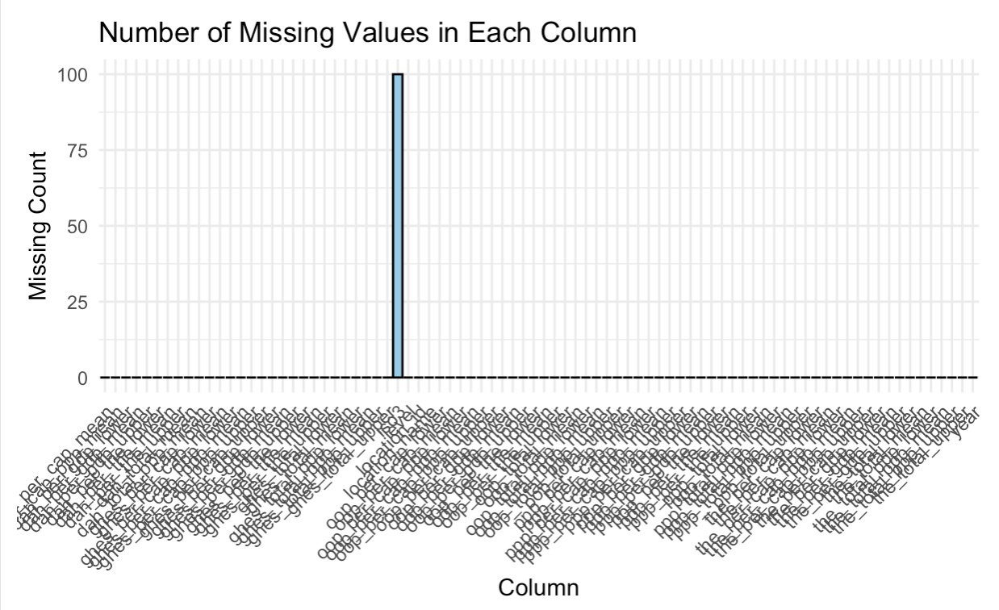
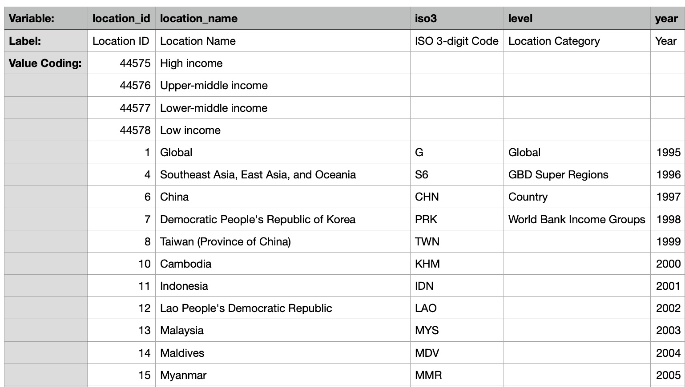
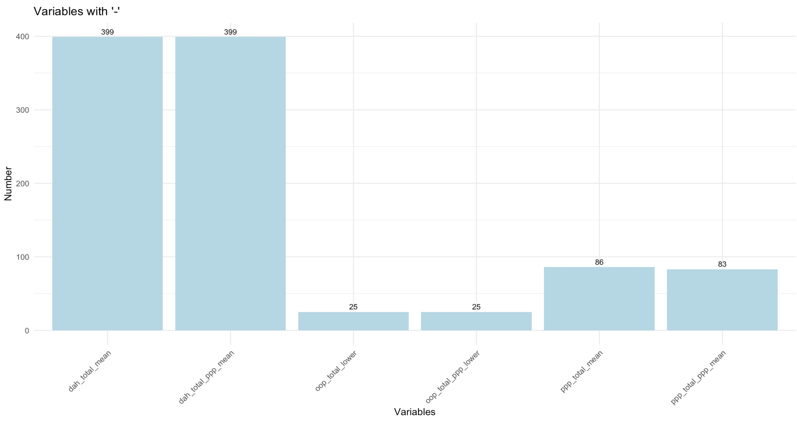
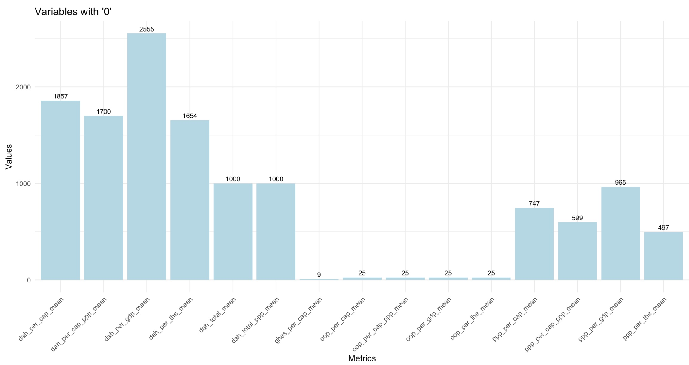

2 Data
For our research, we leveraged datasets from the Institute for Health Metrics and Evaluation (IHME), specifically the Global Health Spending datasets covering the periods 1995 to 2019 and 2020 to 2050. Accessible through the following links respectively: Global Health Spending 1995 to 2019 and Global Health Spending 2020 to 2050. These datasets aim to provide a comprehensive understanding of health spending across diverse countries and regions. IHME, a renowned research institute, specializes in collecting and analyzing global health data, offering valuable insights into health trends and challenges.
The datasets offer a detailed breakdown of total health spending, categorizing expenditures by source (government, out-of-pocket, and prepaid private), and development assistance for health (DAH). To enhance usability, estimates are presented in constant 2021 United States Dollars, constant 2021 purchasing power parity adjusted (PPP) dollars, and as a percentage of gross domestic product (GDP). This diverse set of metrics facilitates a nuanced analysis of health spending trends and their economic implications.
2.1 Technical Description
Data Format and Collection:
The data collection process involved multiple sources, with a primary focus on the World Health Organization’s Global Health Expenditure Database (GHED), a reputable repository compiling global health expenditure information. Additionally, data for development assistance for health (DAH) were sourced from various outlets, including program reports, budget data, national estimates, and National Health Accounts (NHAs). Domestic health spending sources, encompassing government, out-of-pocket, and prepaid private health spending, primarily relied on data from the WHO’s GHED. For countries not covered by GHED, information was extracted from respective country ministries of health or finance websites.
Assessment of GHED-extracted data reliability involved scrutinizing metadata provided by the World Health Organization (WHO). Utilizing natural language processing techniques, a data quality score ranging from 0 to 5 was assigned to each data point, considering metadata aspects such as reporting data source, data type, methods of estimation, and completeness. These quality scores informed the weighing of raw data, and a spatiotemporal Gaussian process model was applied to generate comprehensive time series estimates from 1995 to 2019 for each country. Additionally, 95% uncertainty intervals (UIs) were calculated to convey the range of potential values, accounting for inherent uncertainties. More details about the methodology can be found in the paper titled “Global investments in pandemic preparedness and COVID-19: development assistance and domestic spending on health between 1990 and 2026.”
The dataset is structured in a tabular format, with each row representing a specific country or region and columns containing information on health spending metrics and related economic indicators. There are 79 indicators in total. The five primary variables—government health spending, out-of-pocket health spending, prepaid private health spending, and development assistance for health—all have mean values. Each of these variables is further stratified into subcategories, including per person, per total health spending, and per GDP. Additionally, the dataset provides values representing the lower and upper bounds for constant 2021 United States dollars, and lower and upper bounds for constant 2021 purchasing power parity power dollars, offering a comprehensive exploration of health spending dynamics across diverse metrics and dimensions.
This granularity enables a comprehensive examination of the financing landscape in the realm of global health. The inclusion of lower and upper bounds for each health spending metric, coupled with adjustments for inflation using country-specific exchange rates and the IMF World Economic Outlook database deflator series, reflects a commitment to methodological rigor and transparency.
By incorporating a range of values represented by lower and upper bounds, the dataset acknowledges the inherent uncertainty in economic and health expenditure forecasting. Economic conditions, currency exchange rates, and other external factors can introduce variability in health spending estimates. Therefore, providing a band of potential values serves as a safeguard against unforeseen fluctuations that may impact health spending trajectories.
The adjustment for inflation using country-specific exchange rates and IMF deflators is crucial for maintaining the temporal integrity of the dataset. It ensures that all spending estimates are expressed in a consistent and comparable unit (inflation-adjusted 2021 US dollars), allowing for meaningful analysis and interpretation across different time periods and geographic regions. This meticulous approach to data preparation enhances the dataset’s reliability and utility, catering to the diverse needs of researchers, policymakers, and analysts in the field of global health economics.
This dual-column structure, with lower and upper values, signifies a commitment to precision and transparency in data presentation. The lower and upper values serve as bookends, delineating a plausible range for each metric and acknowledging the inherent uncertainty in health expenditure estimates. This approach enhances the dataset’s reliability, providing users with nuanced insights into the potential variability of the reported values and promoting a more informed interpretation of global health spending trends.
Frequency of Updates:
The dataset on Global Health Spending from 1995 to 2019, provided by IHME, does not appear to be regularly updated, and its last recorded information release was on January 24, 2023.
Importing the Data:
From the IHME Global Health Data Exchange website, anyone can download the datasets, which are encompassed in an 834.93 KB CSV file (2015-2019) and a 1.09 MB CSV file (2020-2050). These files can then be conveniently imported into R for further analysis.
2.2 Research Plan
Within this section, we will undertake a detailed exploration of how this comprehensive dataset equips us to thoroughly respond to the research questions introduced earlier.
Trends in Global Health Spending Over Time:
In this segment, our objective is to visually represent the evolving trends in global health spending over time. To achieve this, we will employ a multiple-line chart, enabling a comprehensive comparison of total health spending, spending per capita, and spending as a percentage of GDP across different temporal spans. By leveraging this visualization technique, we aim to discern any notable trends or patterns in health spending over the specified timeframe. This approach not only facilitates an exploration of the transformation in total global health spending but also provides insights into the observed trends, allowing us to investigate the potential impact of major global events, such as pandemics, on health spending.
Geographic Disparities:
In our pursuit to unveil geographic disparities, we will direct our focus on different regions, which may be country-specific or continent-specific. This approach enables us to explore variations in health spending across diverse regions or continents.
To commence, our examination will involve comparing health expenditure trends over time for various continents. Moreover, considering that the dataset categorizes countries into low, middle, and high-income groups, we aim to analyze health expenditure trends over time within these distinct income brackets.
Adding granularity to our exploration, we intend to provide an overview of total health spending in the dataset’s most recent year, 2019. Through a geographic map, we will visualize total health spending with a continuous scale, creating an animated cartogram for the year 2019. This cartogram will specifically highlight total health spending and break it down into three categories: government, out-of-pocket, and pre-paid private spending.
As a complementary visualization, we will construct a horizontal bar chart to compare total health spending for each country or region. This visualization is particularly effective in illustrating disparities. Additionally, a stacked bar chart will be employed to showcase the composition of health spending in each country, delineating categories such as government spending, out-of-pocket expenses, and prepaid private financing. This approach aims to provide insights into how countries allocate resources within their health systems, further contributing to our understanding of geographic health spending disparities.
Health Spending by Financing Source:
Our third research theme delves into the intricate landscape of health spending by financing source. The dataset meticulously categorizes health spending into three domestic financing sources: government, out-of-pocket, and prepaid private. Within this section, our aim is to unravel nuanced patterns within these categories, exploring how they have evolved over the years from 1995 to 2019. Our particular interest lies in identifying potential effects of global events embedded in the data.
To visually capture the evolving dynamics of health spending by financing source, we advocate for the creation of proportional stacked bar graphs spanning the years from 1995 to 2019. These graphs will serve as insightful tools, facilitating a comparative analysis of the proportions of different financing sources relative to each other across various temporal slices. Specifically, our plan includes generating three distinct graphs representing total spending, spending per person, and spending as a percentage of GDP over the specified time frame, all visualized as proportional stacked bar graphs. This approach provides an effective means to discern shifts and variations over the years, contributing to a comprehensive understanding of the intricate dynamics shaping health spending patterns.
Moreover, our focus on the year 2019, being the most recent year, aims to present a current snapshot of the financial health expenditure landscape. To vividly illustrate the different proportions of health spending in this pivotal year, we intend to employ a pie chart. This visualization will offer a clear and concise representation of the distribution of financing sources, providing a succinct overview of the financial health expenditure situation in 2019.
Global Health Spending Patterns 2020 to 2050:
For the last theme we will compare the past with future health spending patterns. We wil compare them based on the three themes discussed above, so over time patterns, geographic disparities, and health spending by financing source.
To compare them over time, we will create a line chart for the years 1995 to 2050, where the past and future predictions are distinguishable by color. We will do the same for the three different health spending categories (government, out-of-pocket, and prepaid private). Furthermore, we will create stacked bar charts for the years 1995 to 2050 to compare the proportions of financing sources and how they will change over time.
Focusing on the second theme, the geographic disparities. We will create a world map for the years 1995, 2019 and 2050 which will allow us to visually compare the total health spending patterns geographically and how they change over time.
To compare both time and geographic are of the past and future, we want to create a heatmap to display health spending trends across both time and regions. Color intensity will represent spending levels, providing a visual summary of variations over the entire dataset.
2.3 Missing value analysis
As a whole, the data seems to be very clean. Upon thorough scrutiny of the data set, it becomes apparent that a singular column, the column titled “iso3,” has missing data. This column had 100 missing values, while all the other columns had no missing information.

These missing values, however, are not indicative of a flaw or oversight but rather a deliberate design choice in alignment with the dataset’s prescribed structure.The “iso3” column serves as a repository for three-letter country codes, crucial for country-specific identification. Upon closer inspection, it is discernible that certain rows within this column intentionally lack values. The rows that have missing is03 values correspond to values High income, Low income, Lower-middle income, and Upper-middle income in “location_name” column. This intentional omission is justified by consulting the dataset’s documentation, where it is explicitly stated that these specific entries do not correspond to any particular country.

Instead, these instances are intended to encapsulate broader, non-country-specific information or aggregates that do not require a specific country code. In essence, the intentional missing values in the “iso3” column serve as placeholders for entries that transcend the bounds of individual countries, reflecting a nuanced data structure designed to accommodate diverse information categories within the dataset.
That being said, after taking a closer look at the data, we noticed that there are “-” or O inserted as some values.
Those columns that have missing values and how many there are are:
with - values: ppp_total_mean 86
ppp_total_lower 400
ppp_total_upper 75 ppp_total_ppp_mean 83
ppp_total_ppp_lower 386 ppp_total_ppp_upper 77
oop_total_lower 25 oop_total_ppp_lower 25
dah_total_mean 399
dah_total_ppp_mean 399
with “0” values: dah_total_mean 1000 dah_total_ppp_mean 1000 ghes_per_cap_mean 9
ghes_per_cap_lower 17
ghes_per_cap_upper 5
ppp_per_cap_mean 747 ppp_per_cap_lower 928
ppp_per_cap_upper 633
ppp_per_cap_ppp_mean 599 ppp_per_cap_ppp_lower 692 ppp_per_cap_ppp_upper 510 oop_per_cap_mean 25 oop_per_cap_lower 25
oop_per_cap_upper 12
oop_per_cap_ppp_mean 25 oop_per_cap_ppp_lower 25
oop_per_cap_ppp_upper 19
dah_per_cap_mean 1857
dah_per_cap_ppp_mean 1700
ppp_per_the_mean 497
ppp_per_the_lower 499 ppp_per_the_upper 460 oop_per_the_mean 25
oop_per_the_lower 25
oop_per_the_upper 25
dah_per_the_mean 1654
dah_per_the_lower 1660
dah_per_the_upper 1648
ppp_per_gdp_mean 965 ppp_per_gdp_lower 1237
ppp_per_gdp_upper 800 oop_per_gdp_mean 25
oop_per_gdp_lower 25
oop_per_gdp_upper 25
dah_per_gdp_mean 2555
dah_per_gdp_lower 2591
dah_per_gdp_upper 2537
Below are two bar graphs with this information illustrated.
 
When looking at the data, each country has 25 rows of data (corresponding to years). So the variables in which the cases of - or 0 being 25, that is that one countries values have missing data. That then got us thinking about the looking at each location_name by itself and seeing if the missing values for each of those rows is the same or different. It turns out that, for different years, the amount of values that are - or 0 for each location, might not be the same.
That being said, we decided against doing any imputation and we decided that we would convert any values that are - or 0 into 0. Since there is no case where the geniune value for any of the countries should be 0, we would not have to worry about misinterpretation.